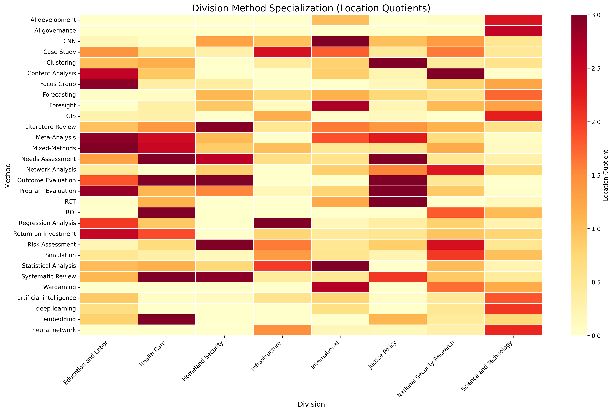

What methods are being used by whom, and how is AI being used in those methods?
Analysis of RAND research publications from 2016-2025 reveals rapid AI adoption but limited integration. AI methods now represent 31.4% of usage, yet only 2.4% of active method applications include AI integration.
Key Findings
üìä Method Usage Landscape
- Case Study leads with 43,807 uses
- Literature Review: 39,101 uses
- 67.3% collaboration rate
- Platform methods span all divisions
ü§ñ AI Integration Status
- 31.4% of methods are AI-related (2025)
- Up from 5.4% in 2016
- Only 2.4% active AI integration
- Concentrated in few divisions
üè¢ Division Specializations
- Science & Tech: AI methods (LQ 2.58)
- Health Care: Clinical methods (LQ 15.31)
- Education: Causal inference (LQ 9.41)
- Clear methodological signatures
üë• Method Champions
- Brian A. Jackson: Multi-method leader
- James Black: AI champion (21 uses)
- Strong collaboration networks
- Method adoption follows influencers
Method Analysis
Top Methods by Frequency
The 50 most frequently used research methods across RAND publications.
AI Method Growth Timeline
Exponential growth in AI method adoption from 2016 to 2025.
Division Specializations
Method Specialization by Division
Location Quotient analysis reveals unique methodological signatures for each RAND division.
Division Method Diversity
Comparison of methodological breadth across divisions.
Temporal Evolution
Top Methods Race (2016-2025)

Watch how method rankings evolve over time, with AI methods rising rapidly.
AI vs Traditional Methods

The growing share of AI methods in RAND's research portfolio.
Emerging Methods

New methods entering RAND's toolkit, primarily AI/ML approaches.
Method Lifecycle Analysis
Classification of methods by growth stage: 60% emerging, 40% growing.
Author-Method Networks
Top Method Champions
Leading researchers driving adoption of specific methods.
Network Structure
Distribution of connections in the author-method network.
Network Statistics
- Total author-method connections: 44,001
- Average collaborators per document: 4.1
- Cross-division collaboration rate: 83.2%
- Platform methods used across 4+ divisions: 47
Interactive Explorations
Enhanced WizMap Network
Explore the complete method network with multi-dimensional filtering:
- Filter by division, lifecycle stage, or AI integration
- Node size shows usage frequency
- Node color indicates lifecycle stage
- Edge width represents co-occurrence strength
Detailed Reports & Data
üìä Full Analysis Report
Comprehensive findings with detailed methodology and appendices.
View Reportüíæ Download Data
Access raw data files for further analysis: